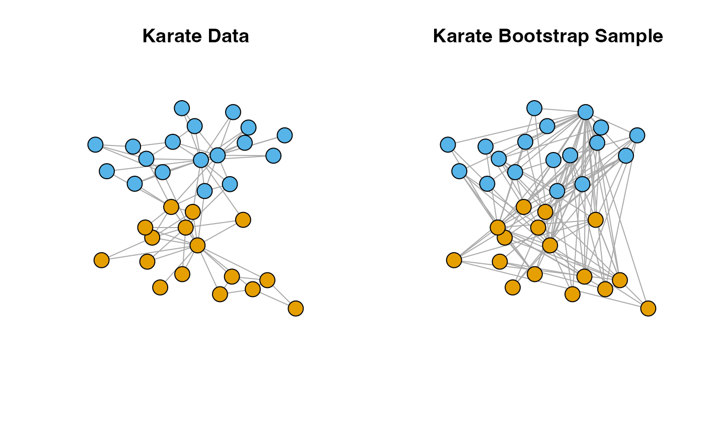

Generate bootstrap samples of a network by resampling vertices. This function uses a modified version of the vertboot from the snowboot package to allow flexible input and output network types.
Arguments
- network
An igraph object representing the original network.
- B
An integer specifying the number of bootstrap samples to generate. Defaults to 1000.
- output.type
A character string specifying the format of the output networks. Options include
"igraph","matrix","dgCMatrix", or"edgelist". Defaults to"igraph". See make_network_type for details.
Details
Generates bootstrap samples of a network by resampling vertices. This function uses a modified version of the vertboot from the snowboot (Ramirez-Ramirez et al. 2022) package to allow flexible input and output network types.
This procedure is first described in Snijders and Borgatti (1999) and is outlined explicitly in Chen et al. (2018) .
References
Chen Y, Gel YR, Lyubchich V, Nezafati K (2018).
“Snowboot: Bootstrap Methods for Network Inference.”
The R Journal, 10(2).
Ramirez-Ramirez L, Nezafati K, Chen Y, Lyubchich Y, Gel YR (2022).
snowboot: Bootstrap Methods for Network Inference.
R package version 1.0.2, https://cran.r-project.org/web/packages/snowboot.
Snijders TAB, Borgatti SP (1999).
“Non-parametric standard errors and tests for network statistics.”
Connections, 22(2), 161--170.
Examples
library(igraph)
data(karate)
set.seed(12)
boot.samp <- bootstrap_vertex(karate, B=1)
#plot comparison of original data and bootstrap sample
par(mfrow = c(1, 2))
#get the same positions in the original data and bootstrap samples
l <- igraph::layout_nicely(karate)
which.index <- NA
for(i in 1:gorder(boot.samp[[1]])){
which.index[i] <- which(V(boot.samp[[1]])$name[i] == V(karate)$name)
}
plot(karate,
layout = l,
main = "Karate Data",
vertex.label = NA)
plot(boot.samp[[1]],
layout = l[which.index, ],
main = "Karate Bootstrap Sample",
vertex.label = NA,
vertex.color = V(karate)$Faction[which.index ])
